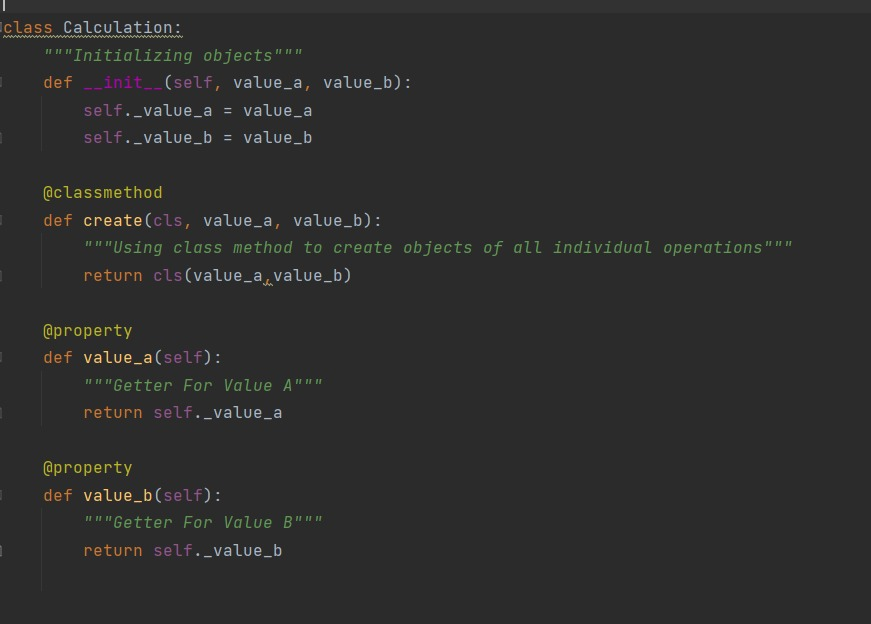

OOPS CONCEPTS IN CALCULATOR PROGRAM
Polymorphism
the structure of a program which consists of a class and methods in it with objects and some
variables to pass through it.
In our calculator program, a class named Calculator is with five different methods with a prefixed result as 0 and four different variables in four different methods which will give the desired
output.

Encapsulation
It describes the idea of wrapping data and the methods that work on data within one unit. This
puts restrictions on accessing variables and methods directly and can prevent the accidental
modification of data. To prevent accidental change, an object’s variable can only be changed by
an object’s method. Those types of variables are known as private variable.
The variable result is made private in the program and it is declared in the function with the
object self.
Abstraction
Abstraction is used to hide the internal functionality of the function from the users. The users
only interact with the basic implementation of the function, but inner working is hidden.

In the calculator program the results of the variables of classes addition, subtraction,
multiplication , division are derived from the variables used in class calculation

Inheritance
So in inheritance a class calculator has different methods add_number, subtracy_number,
multiply_number, divide_number which are depicted from classes addition,
subtraction,multiplication and division.
This means that the classes addition, subtraction, multiplication, and division are the subclasses
of the class calculator.